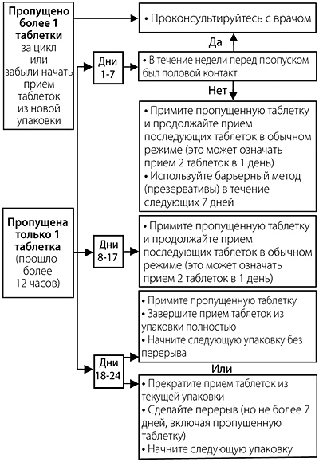

|
 |
| ЯРИНА® (YARINA®) drospirenone, ethinylestradiol таб., покр. пленочной оболочкой | |||||||||||||||||||||||||||||||||||||||||||||||||||||||||||
|
Клинико-фармакологическая группа: Контрацептивный комбинированный препарат (эстроген+гестаген) Номер и дата регистрации: П N013882/01 от 02.04.08 Код ATX: G03AA12 |
Владелец регистрационного удостоверения: зарегистрировано и произведено Представительство: | ||||||||||||||||||||||||||||||||||||||||||||||||||||||||||
Форма выпуска, состав и упаковка Таблетки, покрытые пленочной оболочкой светло-желтого цвета, круглые, двояковыпуклые, с одной стороны выгравирован шестиугольник, внутри которого буквы "DO".
Вспомогательные вещества: лактозы моногидрат - 48.17 мг, крахмал кукурузный - 14.4 мг, крахмал кукурузный прежелатинизированный - 9.6 мг, повидон К25 - 4 мг, магния стеарат - 0.8 мг. Состав оболочки: гипромеллоза 5 cP - 1.0112 мг, макрогол 6000 - 0.2024 мг, тальк - 0.2024 мг, титана диоксид - 0.5565 мг, железа оксид желтый - 0.0275 мг. 21 шт. - блистеры (1) с кармашком для ношения блистера - пачки картонные с контролем первого вскрытия. | |||||||||||||||||||||||||||||||||||||||||||||||||||||||||||
| |||||||||||||||||||||||||||||||||||||||||||||||||||||||||||
Описание препарата основано на официально утвержденной инструкции по применению и утверждено компанией-производителем для издания 2023 г. | |||||||||||||||||||||||||||||||||||||||||||||||||||||||||||
Фармакологическое действие |
Фармакокинетика |
Показания |
Режим дозирования |
Побочное действие |
Противопоказания |
Беременность и лактация |
Особые указания |
Передозировка |
Лекарственное взаимодействие |
Условия хранения и сроки годности |
Условия реализации
Фармакологическое действие
Ярина® - низкодозированный монофазный пероральный комбинированный эстроген-гестагенный контрацептивный препарат. Контрацептивный эффект комбинированных пероральных контрацептивных препаратов (КОК) основан на взаимодействии различных факторов, наиболее важными из которых являются подавление овуляции, повышение вязкости секрета шейки матки и изменения в эндометрии. При правильном применении препарата Ярина® индекс Перля (показатель, отражающий число беременностей у 100 женщин, применяющих контрацептив в течение года) составляет менее 1. При пропуске таблеток или неправильном применении индекс Перля может возрастать. У женщин, принимающих КОК, менструальный цикл становится более регулярным, реже наблюдаются болезненные менструальноподобные кровотечения, уменьшается интенсивность и продолжительность кровотечения, в результате чего снижается риск железодефицитной анемии. Также имеются данные о снижении риска развития рака эндометрия и яичников при приеме КОК. Дроспиренон, входящий в состав препарата Ярина®, обладает антиминералокортикоидной активностью и способен предупреждать увеличение массы тела и появление других симптомов (например, отеков), связанных с эстрогензависимой задержкой жидкости. Дроспиренон оказывает положительное воздействие на предменструальный синдром. В сочетании с этинилэстрадиолом дроспиренон демонстрирует благоприятный эффект на липидный профиль, характеризующийся повышением ЛПВП. Дроспиренон также обладает антиандрогенной активностью и способствует уменьшению угрей (акне), жирности кожи и волос (себореи). Эти особенности дроспиренона следует учитывать при выборе контрацептива женщинам с гормонозависимой задержкой жидкости, а также женщинам с акне и себореей. Дроспиренон не обладает андрогенной, эстрогенной, глюкокортикоидной и антиглюкокортикоидной активностью. Все это в сочетании с антиминералокортикоидным и антиандрогенным действием обеспечивает дроспиренону биохимический и фармакологический профиль, сходный с естественным прогестероном. Фармакокинетика
Дроспиренон Всасывание После приема внутрь дроспиренон быстро и почти полностью абсорбируется из ЖКТ. После однократного приема препарата Cmax дроспиренона в плазме достигается через 1-2 ч и составляет 38 нг/мл. Прием пищи не влияет на биодоступность, которая колеблется в диапазоне от 76 до 85%. Распределение Дроспиренон связывается с альбумином плазмы и не связывается с глобулином, связывающим половые гормоны (ГСПГ) или кортикостероид-связывающим глобулином (КСГ). Лишь 3-5% от общей концентрации вещества в плазме крови присутствует в свободном виде, 95-97% вещества неспецифически связывается с альбумином. Индуцированное этинилэстрадиолом повышение ГСПГ не влияет на связывание дроспиренона с белками плазмы крови. Средний кажущийся Vd составляет 3.7±1.2 л/кг. Равновесная концентрация. Концентрация ГСПГ не оказывает влияния на показатели фармакокинетики дроспиренона. При ежедневном применении препарата внутрь концентрация дроспиренона в плазме крови повышается в 2-3 раза, Css достигается через 8 дней приема препарата. Метаболизм После приема внутрь дроспиренон полностью метаболизируется. Большинство метаболитов в плазме представлены кислотными формами дроспиренона. Дроспиренон также является субстратом для окислительного метаболизма, катализируемого изоферментом CYP3A4. Скорость метаболического клиренса дроспиренона из плазмы крови составляет 1.5±0.2 мл/мин/кг. Выведение Концентрация дроспиренона в плазме крови снижается двухфазно. Во второй, конечной, фазе T1/2 около 31 ч. В неизмененном виде дроспиренон экскретируется в следовых количествах. Его метаболиты выводятся через ЖКТ и почками в соотношении примерно 1.2:1.4. Т1/2 метаболитов дроспиренона составляет примерно 40 ч. Фармакокинетика у особых групп пациентов Нарушения функции почек. Исследования показали, что концентрация дроспиренона в плазме крови у женщин с почечной недостаточностью легкой степени (КК - 50-80 мл/мин) при достижении равновесного состояния и у женщин с нормальной функцией почек (КК - более 80 мл/мин) сопоставимы. Тем не менее, у женщин с почечной недостаточностью средней степени тяжести (КК - 30-50 мл/мин) средняя концентрация дроспиренона в плазме крови была на 37% выше, чем у пациенток с нормальной функцией почек. Не отмечено изменения концентрации калия в плазме крови при применении дроспиренона. Фармакокинетика дроспиренона не изучалась у пациенток с почечной недостаточностью тяжелой степени. Нарушения функции печени. У женщин с печеночной недостаточностью средней степени тяжести (класс B по шкале Чайлд-Пью) AUC сопоставима с соответствующим показателем у здоровых женщин с близкими значениями Cmax в фазе абсорбции и распределения. Т1/2 дроспиренона у больных с печеночной недостаточностью средней степени тяжести оказался в 1.8 раз выше, чем у здоровых добровольцев. У больных с печеночной недостаточностью средней степени тяжести отмечено снижение клиренса дроспиренона приблизительно на 50% по сравнению со здоровыми женщинами, при этом не отмечено различий в концентрации калия в плазме крови в изучаемых группах. При выявлении сахарного диабета и сопутствующем применении спиронолактона (оба состояния расцениваются как факторы, предрасполагающие к развитию гиперкалиемии), повышения концентрации калия в плазме крови не установлено. Таким образом, можно заключить, что переносимость дроспиренона у женщин с печеночной недостаточностью легкой и средней степени тяжести хорошая (класс B по шкале Чайлд-Пью). Фармакокинетика дроспиренона не изучалась у пациенток с печеночной недостаточностью тяжелой степени. Этинилэстрадиол Всасывание После приема препарата внутрь этинилэстрадиол быстро и полностью абсорбируется из ЖКТ. Cmax в плазме достигается через 1-2 ч и составляет 100 пг/мл. Этинилэстрадиол подвергается эффекту "первого прохождения" через печень, в результате этого его биодоступность при приеме внутрь составляет в среднем 45% при высокой межиндивидуальной вариабельности - от 20 до 65%. Одновременный прием пищи в отдельных случаях сопровождается снижением биодоступности этинилэстрадиола на 25%. Распределение Этинилэстрадиол неспецифически, но прочно связывается с альбумином плазмы крови (около 98%) и индуцирует повышение концентрации в плазме крови ГСПГ. Предполагаемый Vd составляет 5 л/кг. Равновесная концентрация. Равновесное состояние достигается во второй половине цикла приема препарата, когда концентрация этинилэстрадиола в плазме крови повышается на 40-110% по сравнению с применением разовой дозы. Метаболизм Этинилэстрадиол подвергается значительному первичному метаболизму в кишечнике и печени. Этинилэстрадиол и его окислительные метаболиты первично конъюгированы с глюкуронидами или сульфатом. Скорость метаболического клиренса этинилэстрадиола составляет около 5 мл/мин/кг. Выведение Снижение концентрации этинилэстрадиола в плазме крови носит двухфазный характер; первая фаза характеризуется периодом полувыведения около 1 ч, вторая - 20 ч. Этинилэстрадиол практически не выводится в неизмененном виде. Метаболиты этинилэстрадиола выводятся почками и через кишечник в соотношении 4:6. Т1/2 метаболитов составляет примерно 24 ч. Фармакокинетика у особых групп пациентов Этническая принадлежность. Не установлено влияния этнической принадлежности (исследование проведено на когортах женщин европеоидной расы и японок) на параметры фармакокинетики дроспиренона и этинилэстрадиола. Режим дозирования
Как и когда принимать таблетки Календарная упаковка препарата Ярина® содержит 21 таблетку. Каждая таблетка в упаковке маркируется днем недели, в который она должна быть принята. Таблетки следует принимать внутрь каждый день в течение 21 дня по порядку, указанному на упаковке, примерно в одно и то же время, запивая небольшим количеством воды. Прием таблеток из следующей упаковки начинается после 7-дневного перерыва, во время которого обычно развивается менструальноподобное кровотечение (кровотечение "отмены"). Как правило, оно начинается на 2-3 день после приема последней таблетки и может не закончиться до начала приема таблеток из новой упаковки. После 7-дневного перерыва начинать прием таблеток из новой упаковки необходимо даже в случае, если менструальноподобное кровотечение еще не прекратилось. Это означает, что начинать прием таблеток из новой упаковки необходимо в один и тот же день недели, и что каждый месяц кровотечение "отмены" будет наступать примерно в один и тот же день недели. Начало приема препарата Ярина® Если никакое гормональное противозачаточное средство не применялось в предыдущем месяце Прием препарата Ярина® следует начинать в 1-й день менструального цикла (т.е. в 1-й день менструального кровотечения). Необходимо принять таблетку, которая промаркирована соответствующим днем недели. Затем следует принимать таблетки по порядку. Допускается начало приема на 2-5-й день менструального цикла, но в этом случае рекомендуется дополнительно использовать барьерный метод контрацепции в течение первых 7 дней приема таблеток из первой упаковки. При переходе с других комбинированных контрацептивных препаратов (КОК, контрацептивного вагинального кольца или контрацептивного трансдермального пластыря) Предпочтительно начать прием препарата Ярина® на следующий день после приема последней активной таблетки из предыдущей упаковки, но ни в коем случае не позднее следующего дня после обычного 7-дневного перерыва (для препаратов, содержащих 21 таблетку) или после приема последней неактивной таблетки (для препаратов, содержащих 28 таблеток в упаковке). Начинать прием препарата Ярина® следует после обычного перерыва в приеме активных таблеток в случае перехода с контрацептивных препаратов с пролонгированным режимом применения. Прием препарата Ярина® следует начинать в день удаления вагинального кольца или пластыря, но не позднее дня, когда должно быть введено новое кольцо или наклеен новый пластырь. При переходе с контрацептивов, содержащих только гестагены ("мини-пили", инъекционные формы, имплантат), или с внутриматочной терапевтической системы с высвобождением гестагена Можно перейти с "мини-пили" на препарат Ярина® в любой день (без перерыва), с имплантата или внутриматочного контрацептива с гестагеном - в день его удаления, с инъекционной формы - в день, когда должна быть сделана следующая инъекция. Во всех случаях в течение первых 7 дней приема таблеток препарата Ярина® необходимо дополнительно использовать барьерный метод контрацепции (например, презерватив). После аборта (в т.ч. самопроизвольного) в I триместре беременности Начинать прием препарата можно немедленно. При соблюдении этого условия дополнительных мер контрацепции не требуется. После родов (при отсутствии грудного вскармливания) или прерывания беременности (в т.ч. самопроизвольного) во II триместре Начинать прием препарата следует на 21-28 день после родов (при отсутствии грудного вскармливания) или прерывания беременности во II триместре. Если прием препарата начат позднее, необходимо использовать дополнительно барьерный метод контрацепции в течение первых 7 дней приема таблеток. Если половой контакт имел место до начала приема препарата Ярина®, необходимо исключить беременность. Прием пропущенных таблеток Если опоздание в приеме препарата составило менее 12 ч, контрацептивная защита не снижается. Женщина должна принять таблетку как можно скорее, следующая таблетка принимается в обычное время. Если опоздание в приеме препарата составило более 12 ч, контрацептивная защита снижается. Чем больше таблеток пропущено, и чем ближе пропуск к 7-дневному перерыву в приеме таблеток, тем больше вероятность наступления беременности. При этом необходимо помнить:
Соответственно, если опоздание в приеме таблеток превышает 12 ч (интервал с момента приема последней таблетки - более 36 ч), в зависимости от недели, когда пропущена таблетка, необходимо придерживаться следующих рекомендаций: Первая неделя приема препарата Необходимо принять последнюю пропущенную таблетку как можно скорее, как только женщина вспомнит об этом (даже, если для этого нужно принять 2 таблетки одновременно). Следующую таблетку принимают в обычное время. В течение последующих 7 дней дополнительно должен быть использован барьерный метод контрацепции (например, презерватив). Если половой контакт имел место в течение 7 дней перед пропуском таблетки, необходимо учитывать вероятность наступления беременности. Вторая неделя приема препарата Необходимо принять последнюю пропущенную таблетку как можно скорее, как только женщина вспомнит об этом (даже, если для этого нужно принять 2 таблетки одновременно). Следующую таблетку принимают в обычное время. При условии, что женщина принимала таблетки правильно в течение предшествующих 7 дней, нет необходимости в использовании дополнительных контрацептивных мер. В противном случае, а также при пропуске 2 и более таблеток необходимо дополнительно использовать барьерные методы контрацепции (например, презерватив) в течение последующих 7 дней. Третья неделя приема препарата Риск снижения контрацептивной надежности неизбежен из-за предстоящего перерыва в приеме таблеток. В этом случае необходимо придерживаться следующих алгоритмов:
1. Необходимо принять пропущенную таблетку как можно скорее, как только женщина вспомнит об этом (даже если это означает прием 2 таблеток одновременно). Следующие таблетки принимают в обычное время, пока не закончатся таблетки из текущей упаковки. Прием таблеток из следующей упаковки следует начать сразу же без обычного 7-дневного перерыва. Кровотечение "отмены" маловероятно, пока не закончатся таблетки из второй упаковки, но могут отмечаться "мажущие" выделения и/или "прорывные" кровотечения в дни приема препарата. 2. Можно также прервать прием таблеток из текущей упаковки, сделать перерыв на 7 или менее дней (включая дни пропуска таблеток), после чего начинать прием таблеток из новой упаковки. Если женщина пропустила прием таблеток, и затем во время перерыва в приеме у нее нет кровотечения "отмены", необходимо исключить беременность. Схема действий при нарушении режима приема таблеток:  Допускается принимать не более 2 таблеток в один день. Рекомендации при желудочно-кишечных расстройствах При тяжелых желудочно-кишечных расстройствах всасывание препарата может быть неполным, поэтому следует использовать дополнительные методы контрацепции. Если в течение 3-4 ч после приема таблеток отмечается рвота или диарея, в зависимости от недели приема препарата следует ориентироваться на рекомендации при пропуске таблеток, указанные выше. Если женщина не хочет менять свою обычную схему приема и переносить начало менструации на другой день недели, дополнительную таблетку следует принять из другой упаковки. Прекращение приема препарата Ярина® Прием препарата Ярина® можно прекратить в любое время. Если женщина не планирует беременность, следует позаботиться о других методах контрацепции. Если планируется беременность, следует просто прекратить прием препарата Ярина® и подождать естественного менструального кровотечения. Отсрочка начала менструальноподобного кровотечения Для того чтобы отсрочить начало менструальноподобного кровотечения, необходимо продолжить дальнейший прием таблеток из новой упаковки препарата Ярина® без 7-дневного перерыва. Таблетки из новой упаковки можно принимать так долго, как это необходимо, в т.ч. до тех пор, пока таблетки в упаковке не закончатся. На фоне приема препарата из второй упаковки могут отмечаться "мажущие" кровянистые выделения из влагалища и/или "прорывные" маточные кровотечения. Возобновить прием препарата Ярина® из очередной упаковки следует после обычного 7-дневного перерыва. Изменение дня начала менструального цикла Для того чтобы перенести день начала менструальноподобного кровотечения на другой день недели, женщине следует сократить (но не удлинять) ближайший 7-дневный перерыв в приеме таблеток на столько дней, на сколько женщина хочет. Например, если цикл обычно начинается в пятницу, а в будущем женщина хочет, чтобы он начинался во вторник (3 днями ранее), прием таблеток из следующей упаковки необходимо начать на 3 дня раньше, чем обычно. Чем короче перерыв в приеме таблеток, тем выше вероятность, что менструальноподобное кровотечение не наступит, и во время приема таблеток из второй упаковки будут наблюдаться "мажущие" выделения и/или "прорывные" кровотечения. Применение у отдельных групп пациенток Девочки-подростки. Препарат Ярина® показан только после наступления менархе. Имеющиеся данные не предполагают коррекции дозы у данной группы пациентов. Пациентки пожилого возраста. Не применимо. Препарат Ярина® не показан после наступления менопаузы. Нарушения функции печени. Препарат Ярина® противопоказан к применению у женщин с тяжелыми заболеваниями печени до тех пор, пока показатели функции печени не придут в норму (см. также разделы "Противопоказания" и "Фармакокинетика"). Нарушения функции почек. Препарат Ярина® противопоказан женщинам с тяжелой почечной недостаточностью или с острой почечной недостаточностью (см. также разделы "Противопоказания" и "Фармакокинетика"). Побочное действие
Серьезные нежелательные явления при приеме КОК описаны также в разделе "Особые указания". При приеме препарата Ярина® отмечались описанные ниже побочные реакции.
Описание отдельных побочных реакций У пациенток, принимающих КОК, имеется повышенный риск развития артериальных и венозных тромботических и тромбоэмболических нарушений, включая инфаркт миокарда, инсульт, транзиторные ишемические атаки, тромбоз глубоких вен и тромбоэмболию легочной артерии, более подробно описанные в разделе "Особые указания". Сообщалось о следующих серьезных побочных реакциях у женщин, применяющих КОК. Данные побочные реакции описаны в разделе "Особые указания":
Частота диагностирования рака молочной железы (РМЖ) у женщин, применяющих пероральные контрацептивные препараты, повышена весьма незначительно. РМЖ редко наблюдается у женщин до 40 лет, превышение частоты незначительно по отношению к общему риску возникновения РМЖ. Причинная связь возникновения РМЖ с применением КОК не установлена. Дополнительную информацию см. в разделе "Противопоказания" и "Особые указания". Взаимодействие Взаимодействие других препаратов (индукторов ферментов) с пероральными контрацептивами может приводить к "прорывным" кровотечениям и/или снижению контрацептивного эффекта (см. раздел "Лекарственное взаимодействие"). Противопоказания
Препарат Ярина® противопоказан при наличии любого из состояний/заболеваний/факторов риска, перечисленных ниже. Если какие-либо из этих состояний/заболеваний развиваются впервые на фоне приема препарата, следует немедленно прекратить применение препарата.
С осторожностью Следует тщательно взвешивать потенциальный риск и ожидаемую пользу применения КОК в каждом индивидуальном случае при наличии следующих заболеваний/состояний и факторов риска:
Применение при беременности и кормлении грудью
Препарат противопоказан во время беременности и в период грудного вскармливания. Если беременность выявляется во время применения препарата Ярина®, препарат следует сразу же отменить. Обширные эпидемиологические исследования не выявили повышенного риска дефектов развития у детей, рожденных женщинами, получавших половые гормоны до беременности, или тератогенного действия, когда половые гормоны принимались по неосторожности в ранние сроки беременности. В то же время, данные о результатах приема препарата Ярина® при беременности ограничены, что не позволяет сделать какие-либо выводы о негативном влиянии препарата на беременность, здоровье новорожденного и плода. В настоящее время какие-либо значимые эпидемиологические данные отсутствуют. Прием препарата может уменьшать количество грудного молока и изменять его состав, поэтому применение препарата противопоказано до прекращения грудного вскармливания. Небольшое количество половых гормонов и/или их метаболитов может выводиться с грудным молоком и оказывать влияние на здоровье ребенка. Особые указания
Если какие-либо из состояний, заболеваний и факторов риска, указанных ниже, имеются в настоящее время, следует тщательно взвешивать потенциальный риск и ожидаемую пользу применения препарата Ярина® в каждом индивидуальном случае и обсудить его с женщиной до того, как она решит начинать прием препарата. В случае утяжеления, усиления или первого проявления любого из этих состояний, заболеваний или факторов риска, женщина должна проконсультироваться со своим врачом, который может принять решение о необходимости отмены препарата. Заболевания сердечно-сосудистой системы Результаты эпидемиологических исследований указывают на наличие взаимосвязи между применением КОК и повышением частоты развития венозных и артериальных тромбозов и тромбоэмболий (таких как тромбоз глубоких вен, тромбоэмболия легочной артерии, инфаркт миокарда, цереброваскулярные нарушения) при приеме КОК. Данные заболевания отмечаются редко. Риск развития ВТЭ максимален в первый год приема КОК. Повышенный риск присутствует после первоначального применения КОК или возобновления применения одного и того же или другого КОК (после перерыва между приемами препарата в 4 недели и более). Данные крупномасштабного проспективного исследования с участием 3 групп пациенток показывают, что этот повышенный риск присутствует преимущественно в течение первых 3 месяцев. Общий риск ВТЭ у женщин, принимающих низкодозированные КОК (<0,05 мг этинилэстрадиола) в 2-3 раза выше, чем у небеременных пациенток, которые не принимают КОК, тем не менее, этот риск остается более низким по сравнению с риском ВТЭ во время беременности и родов. ВТЭ может оказаться жизнеугрожающей или привести к летальному исходу (в 1-2% случаев). ВТЭ, проявляющаяся в виде тромбоза глубоких вен или эмболии легочной артерии, может произойти при применении любых КОК. Крайне редко при применении КОК возникает тромбоз других кровеносных сосудов, например, печеночных, брыжеечных, почечных, мозговых вен и артерий или сосудов сетчатки глаза. Симптомы тромбоза глубоких вен: односторонний отек нижней конечности или отек вдоль вены на нижней конечности, боль или дискомфорт в нижней конечности только в вертикальном положении или при ходьбе, локальное повышение температуры в пораженной нижней конечности, покраснение или изменение окраски кожных покровов на нижней конечности. Симптомы тромбоэмболии легочной артерии: затрудненное или учащенное дыхание; внезапный кашель, в т.ч. с кровохарканием; острая боль в грудной клетке, которая может усиливаться при глубоком вдохе; чувство тревоги; сильное головокружение; учащенное или нерегулярное сердцебиение. Некоторые из этих симптомов (например, одышка, кашель) являются неспецифическими и могут быть истолкованы неверно как признаки других более часто встречающихся и менее тяжелых состояний/заболеваний (например, инфекции дыхательных путей). АТЭ может привести к инсульту, окклюзии сосудов или инфаркту миокарда. Симптомы инсульта: внезапная слабость или потеря чувствительности лица, конечностей, особенно с одной стороны тела, внезапная спутанность сознания, проблемы с речью и пониманием; внезапная одно- или двухсторонняя потеря зрения; внезапное нарушение походки, головокружение, потеря равновесия или координации движений; внезапная, тяжелая или продолжительная головная боль без видимой причины; потеря сознания или обморок с приступом судорог или без него. Другие признаки окклюзии сосудов: внезапная боль, отечность и незначительная синюшность конечностей, симптомокомплекс "острый живот". Симптомы инфаркта миокарда: боль, дискомфорт, давление, тяжесть, чувство сжатия или распирания в груди или за грудиной, с иррадиацией в спину, челюсть, левую верхнюю конечность, область эпигастрия; холодный пот, тошнота, рвота или головокружение, сильная слабость, тревога или одышка; учащенное или нерегулярное сердцебиение. АТЭ может оказаться жизнеугрожающей или привести к летальному исходу. У женщин с сочетанием нескольких факторов риска или высокой выраженностью одного из них следует рассматривать возможность их взаимоусиления. В подобных случаях суммарное значение имеющихся факторов риска повышается. В этом случае прием препарата Ярина® противопоказан (см. раздел "Противопоказания"). Риск развития тромбоза (венозного и/или артериального) и тромбоэмболии или цереброваскулярных нарушений повышается:
при наличии:
Применение любых комбинированных гормональных контрацептивов повышает риск развития ВТЭ. Применение препаратов, содержащих левоноргестрел, норгестимат или норэтистерон, вызывает наименьший риск развития ВТЭ. Применение других препаратов, таких как Ярина®, может привести к двукратному увеличению риска. Выбор в пользу применения КОК с более высоким риском развития ВТЭ может быть сделан только после консультации пациентки, позволяющей убедиться, что она полностью понимает риск развития ВТЭ, связанный с применением препарата Ярина®, влияние препарата на существующие у нее факторы риска и то, что риск развития ВТЭ максимален в течение первого года применения препарата. Вопрос о возможной роли варикозного расширения вен и поверхностного тромбофлебита в развитии ВТЭ остается спорным. Следует учитывать повышенный риск развития тромбоэмболий в послеродовом периоде. Нарушения периферического кровообращения также могут отмечаться при сахарном диабете, системной красной волчанке, гемолитико-уремическом синдроме, хронических воспалительных заболеваниях кишечника (болезнь Крона или язвенный колит) и серповидно-клеточной анемии. Увеличение частоты и тяжести мигрени во время применения КОК (что может предшествовать цереброваскулярным нарушениям) является основанием для немедленной отмены приема этих препаратов. К биохимическим показателям, указывающим на наследственную или приобретенную предрасположенность к венозному или артериальному тромбозу относится следующее: резистентность к активированному протеину С, гипергомоцистеинемия, дефицит антитромбина III, дефицит протеина С, дефицит протеина S, антифосфолипидные антитела (антитела к кардиолипину, волчаночный антикоагулянт). При оценке соотношения риска и пользы следует учитывать, что адекватное лечение соответствующего состояния может уменьшить связанный с ним риск тромбоза. Также следует учитывать, что риск тромбозов и тромбоэмболий при беременности выше, чем при приеме низкодозированных пероральных контрацептивов (<0,05 мг этинилэстрадиола). Опухоли Наиболее существенным фактором риска развития рака шейки матки является персистирующая папилломавирусная инфекция. Имеются сообщения о некотором повышении риска развития рака шейки матки при длительном применении КОК. Однако связь с приемом КОК не доказана. Обсуждается возможность взаимосвязи этих данных со скринингом заболеваний шейки матки или с особенностями полового поведения (более редкое применение барьерных методов контрацепции). Мета-анализ 54 эпидемиологических исследований показал, что имеется несколько повышенный относительный риск развития РМЖ, диагностированного у женщин, принимающих КОК в настоящее время (относительный риск 1.24). Повышенный риск постепенно исчезает в течение 10 лет после прекращения приема этих препаратов. В связи с тем, что РМЖ редко у женщин до 40 лет, увеличение числа диагнозов РМЖ у женщин, принимающих КОК в настоящее время или принимавших недавно, является незначительным по отношению к общему риску этого заболевания. Его связь с приемом КОК не доказана. Наблюдаемое повышение риска может быть также следствием тщательного наблюдения и более ранней диагностики РМЖ у женщин, применяющих КОК, биологическим действием половых гормонов или сочетанием обоих факторов. У женщин, когда-либо использовавших КОК, выявляются более ранние стадии РМЖ, чем у женщин, никогда их не применявших. В редких случаях на фоне применения КОК наблюдалось развитие доброкачественных, а в крайне редких - злокачественных опухолей печени, которые в отдельных случаях приводили к угрожающему жизни внутрибрюшному кровотечению. В случае появления сильных болей в области живота, увеличения печени или признаков внутрибрюшного кровотечения это следует учитывать при проведении дифференциального диагноза. Злокачественные опухоли могут оказаться жизнеугрожающими или привести к летальному исходу. Другие состояния Прогестиновый компонент в препарате Ярина® является антагонистом альдостерона, обладающим калийсберегающими свойствами. В большинстве случаев не должно наблюдаться повышения концентрации калия в плазме крови. В клинических исследованиях у некоторых пациенток с почечной недостаточностью легкой или средней степени тяжести и сопутствующем приеме калийсберегающих препаратов концентрация калия в плазме крови незначительно повышалась во время приема дроспиренона. Поэтому концентрацию калия в плазме крови необходимо контролировать в течение первого цикла приема препарата у пациенток с почечной недостаточностью и при изначальной концентрации калия на верхней границе нормы, особенно при сопутствующем приеме калийсберегающих препаратов (см. раздел "Лекарственное взаимодействие"). У женщин с гипертриглицеридемией (или наличием этого состояния в семейном анамнезе) возможно повышение риска развития панкреатита во время приема КОК. Несмотря на то, что небольшое повышение АД было описано у многих женщин, принимающих КОК, клинически значимое повышение отмечалось редко. Тем не менее, если во время приема препарата развивается стойкое, клинически значимое повышение АД, следует отменить эти препараты и начать лечение артериальной гипертензии. Прием препарата может быть продолжен, если с помощью гипотензивной терапии достигнуты нормальные значения АД. Следующие состояния, как сообщалось, развиваются или ухудшаются как во время беременности, так и при приеме КОК, но их связь с приемом КОК не доказана: желтуха и/или зуд, связанный с холестазом; формирование камней в желчном пузыре; порфирия; системная красная волчанка; гемолитико-уремический синдром; хорея Сиденхема; герпес во время беременности; потеря слуха, связанная с отосклерозом. Также описаны случаи ухудшения течения эндогенной депрессии, эпилепсии, болезни Крона и язвенного колита на фоне применения КОК. У женщин с наследственными формами ангионевротического отека экзогенные эстрогены могут вызывать или ухудшать симптомы ангионевротического отека. Острые или хронические нарушения функции печени могут потребовать отмены препарата до тех пор, пока показатели функции печени не вернутся в норму. Рецидив холестатической желтухи, развившейся впервые во время предшествующей беременности или предыдущего приема половых гормонов, требует прекращения приема препарата. Хотя КОК могут оказывать влияние на инсулинорезистентность и толерантность к глюкозе, необходимости в коррекции дозы гипогликемических препаратов у пациенток с сахарным диабетом, использующих низкодозированные КОК (<0,05 мг этинилэстрадиола), как правило, не возникает. Тем не менее, женщины с сахарным диабетом должны тщательно наблюдаться во время приема КОК. Иногда может развиваться хлоазма, особенно у женщин с наличием в анамнезе хлоазмы беременных. Женщины со склонностью к хлоазме во время приема препарата Ярина® должны избегать длительного пребывания на солнце и воздействия ультрафиолетового излучения. Лабораторные тесты Прием препарата Ярина® может влиять на результаты некоторых лабораторных тестов, включая показатели функции печени, почек, щитовидной железы, надпочечников, концентрацию транспортных белков в плазме, показатели углеводного обмена, параметры свертывания крови и фибринолиза. Изменения обычно не выходят за границы нормальных значений. Дроспиренон увеличивает активность ренина плазмы и концентрацию альдостерона, что связано с его антиминералокортикоидным эффектом. Снижение эффективности Эффективность препарата Ярина® может быть снижена в следующих случаях: при пропуске таблеток, желудочно-кишечных расстройствах или в результате лекарственного взаимодействия. Частота и выраженность менструальноподобных кровотечений На фоне приема препарата Ярина® могут наблюдаться нерегулярные (ациклические) кровотечения из влагалища ("мажущие" кровянистые выделения и/или "прорывные" маточные кровотечения), особенно в течение первых месяцев применения. Поэтому оценка любых нерегулярных менструальноподобных кровотечений должна проводиться после периода адаптации, составляющего около 3 циклов приема препарата. Если нерегулярные менструальноподобные кровотечения повторяются или развиваются после предшествующих регулярных циклов, следует провести тщательное обследование для исключения злокачественных новообразований или беременности. У некоторых женщин во время перерыва в приеме таблеток может не развиться кровотечение "отмены". Если препарат Ярина® принимался согласно рекомендациям, маловероятно, что женщина беременна. Тем не менее, при нерегулярном применении препарата и отсутствии двух подряд менструальноподобных кровотечений, прием препарата не может быть продолжен до исключения беременности. Медицинские осмотры Перед началом или возобновлением применения препарата Ярина® необходимо ознакомиться с анамнезом жизни, семейным анамнезом женщины, провести тщательное общемедицинское и гинекологическое обследование, исключить беременность. Объем исследований и частота контрольных осмотров должны основываться на существующих нормах медицинской практики при необходимом учете индивидуальных особенностей каждой пациентки. Как правило, измеряется АД, ЧСС, определяется ИМТ, проверяется состояние молочных желез, брюшной полости и органов малого таза, включая цитологическое исследование эпителия шейки матки (тест по Папаниколау). Обычно контрольные обследования следует проводить не реже 1 раза в 6 месяцев. Необходимо иметь в виду, что препарат Ярина® не предохраняет от ВИЧ-инфекции (СПИД) и других заболеваний, передающихся половым путем. Влияние на способность к управлению транспортными средствами и механизмами Не изучалось. Случаев неблагоприятного влияния на способность к управлению транспортными средствами и механизмами при применении препарата не выявлено. Состояния, требующие консультации врача
Женщине следует прекратить прием таблеток и немедленно обратиться за медицинской помощью, если имеются возможные признаки тромбоза, инфаркта миокарда или инсульта: необычный кашель; необычно сильная боль за грудиной, отдающая в левую руку; неожиданно возникшая одышка, необычная, сильная и длительная головная боль или приступ мигрени; частичная или полная потеря зрения или двоение в глазах; нечленораздельная речь; внезапные изменения слуха, обоняния или вкуса; головокружение или обморок; слабость или потеря чувствительности в любой части тела; сильная боль в животе; сильная боль в нижней конечности или внезапно возникший отек любой из нижних конечностей. Передозировка
О серьезных нарушениях при передозировке не сообщалось. На основании суммарного опыта применения КОК симптомы, которые могут отмечаться при передозировке: тошнота, рвота и кровотечение "отмены". Последнее может возникать у девочек, не достигших возраста менархе, при приеме препарата по неосторожности. Лечение: проводят симптоматическую терапию. Специфического антидота нет. Лекарственное взаимодействие
Влияние других лекарственных препаратов на препарат Ярина® Возможно взаимодействие с лекарственными препаратами, индуцирующими микросомальные ферменты печени, в результате чего может увеличиваться клиренс половых гормонов, что, в свою очередь, может приводить к "прорывным" маточным кровотечениям и/или снижению контрацептивного эффекта. Индукция микросомальных ферментов печени может наблюдаться уже через несколько дней лечения. Максимальная индукция микросомальных ферментов печени обычно наблюдается в течение нескольких недель. После отмены препарата индукция микросомальных ферментов печени может сохраняться в течение 4 недель. Краткосрочная терапия Женщинам, которые получают лечение такими препаратами в дополнение к препарату Ярина®, рекомендуется использовать барьерный метод контрацепции или выбрать иной негормональный метод контрацепции. Барьерный метод контрацепции следует использовать в течение всего периода приема сопутствующих препаратов, а также в течение 28 дней после их отмены. В случае необходимости продолжения терапии препаратом-индуктором после того как закончен прием таблеток из текущей упаковки препарата Ярина®, следует начинать прием таблеток из новой упаковки препарата Ярина® без обычного перерыва в приеме. Долгосрочная терапия Женщинам, длительно принимающим препараты - индукторы микросомальных ферментов печени, рекомендуется использовать другой надежный негормональный метод контрацепции. Средства, увеличивающие клиренс препарата Ярина® (ослабляющие эффективность путем индукции ферментов): фенитоин, барбитураты, примидон, карбамазепин, рифампицин и, возможно, также окскарбазепин, топирамат, фелбамат, гризеофульвин, а также препараты, содержащие зверобой продырявленный. Средства с различным влиянием на клиренс препарата Ярина®: при совместном применении с препаратом Ярина® многие ингибиторы протеазы ВИЧ или вируса гепатита С и ненуклеозидные ингибиторы обратной транскриптазы могут как увеличивать, так и уменьшать концентрацию эстрогена или прогестагена в плазме крови. В некоторых случаях такое влияние может быть клинически значимо. Средства, снижающие клиренс КОК (ингибиторы ферментов): сильные и умеренные ингибиторы CYP3A4, такие как противогрибковые препараты группы азолов (например, итраконазол, вориконазол, флуконазол), верапамил, антибиотики группы макролидов (например, кларитромицин, эритромицин), дилтиазем и грейпфрутовый сок могут повышать плазменные концентрации эстрогена или прогестагена, или их обоих. Было показано, что эторикоксиб в дозах 60 и 120 мг/сут при совместном приеме с КОК, содержащими 0.035 мг этинилэстрадиола, повышает концентрацию этинилэстрадиола в плазме крови в 1.4 и 1.6 раза соответственно. Влияние препарата Ярина® на другие лекарственные препараты КОК могут влиять на метаболизм других препаратов, что приводит к повышению (например, циклоспорин) или снижению (например, ламотриджин) их концентрации в плазме крови и тканях. In vitro дроспиренон способен слабо или умеренно ингибировать ферменты цитохрома P450 CYP1A1, CYP2C9, CYP2C19 и CYP3A4. На основании исследований взаимодействия in vivo у женщин-добровольцев, принимавших омепразол, симвастатин или мидазолам в качестве маркерных субстратов, можно заключить, что клинически значимое влияние 3 мг дроспиренона на метаболизм лекарственных препаратов, опосредованный ферментами цитохрома P450, маловероятно. In vitro этинилэстрадиол является обратимым ингибитором CYP2C19, CYP1A1 и CYP1A2, а также необратимым ингибитором CYP3A4/5, CYP2C8 и CYP2J2. В клинических исследованиях назначение гормонального контрацептива, содержащего этинилэстрадиол, не приводило к какому-либо повышению или приводило лишь к слабому повышению концентраций субстратов CYP3A4 в плазме крови (например, мидазолама), в то время как плазменные концентрации субстратов CYP1A2 могут возрастать слабо (например, теофиллин) или умеренно (например, мелатонин и тизанидин). Фармакодинамическое взаимодействие Было показано, что совместное применение этинилэстрадиолсодержащих препаратов и противовирусных препаратов прямого действия, содержащих омбитасвир, паритапревир, дасабувир или их комбинацию, ассоциируется с повышением концентрации АЛТ более чем в 20 раз по сравнению с ВГН у здоровых и инфицированных вирусом гепатита C женщин (см. раздел "Противопоказания"). Другие формы взаимодействия У пациенток с ненарушенной функцией почек сочетанное применение дроспиренона и ингибиторов АПФ или НПВП не оказывает значимого эффекта на концентрацию калия в плазме крови. Тем не менее, сочетанное применение препарата Ярина® с антагонистами альдостерона или калийсберегающими диуретиками не изучено. При совместном приеме с данными препаратами концентрацию калия в плазме крови необходимо контролировать в течение первого цикла приема препарата (см. раздел "Особые указания"). |
|||||||||||||||||||||||||||||||||||||||||||||||||||||||||||
Вернуться наверх |
|||||||||||||||||||||||||||||||||||||||||||||||||||||||||||
Copyright © Справочник Видаль «Лекарственные препараты в России», Москва, Россия